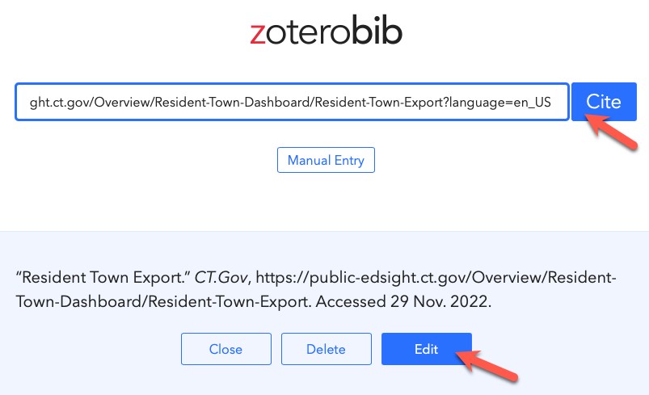

Section 3
Give credit to people, organizations, resources, and tools that helped you to create this data story. Write in HTML format and include links when appropriate. When you paraphrase or quote from a specific reading, cite it using any standard academic citation style (such as MLA or APA inline citations), and include the full reference in a bibliography section at the end of your data story. For help with creating citations, I highly recommend the Zbib.org tool. Insert any URL, but you may need to click the Edit button to manually add missing details, such as author and date if the tool does not automatically recognize them, as shown in Image 1 and 2 below.
Image 1: After inserting a URL into the ZBib.org tool, you may need to click the Edit button to manually add missing details.

Image 2: Clicking the Edit button in ZBib allows you to enter or correct missing details, such as the full Website Title.
Below are sample sentences with MLA inline citations that would appear in the body of the data story, followed by the full references that would appear in the bibliography at the bottom:
Sample sentences
The City of Hartford recently created a housing code that requires the registration of the full names and contact information for all owners of apartment buildings -- including the officers of Limited Liability Corporations (LLCs) -- in order to "close municipal loopholes that allow anonymous slumlords to operate unchecked" (Lurye).
In most towns, the percentage of high-needs students enrolled in traditional public schools surpasses those enrolled in magnet, charter, and technical schools in the most recent academic year (“Resident Town Export”).
...later, insert a bibliography at the end of your data story:
Works Cited:
Lurye, Rebecca. “New Housing Code in Hartford Would Keep Slumlords from Hiding Behind LLCs.” Hartford Courant, May 31, 2019. https://www.courant.com/community/hartford/hc-news-hartford-housing-code-20190531-hcke2jo2x5fpdgz75xf4hlv2ki-story.html.
“Comprehensive Materials Management Strategy.” CT.gov, https://portal.ct.gov/DEEP/Waste-Management-and-Disposal/Solid-Waste-Management-Plan/Comprehensive-Materials-Management-Strategy. https://portal.ct.gov/-/media/DEEP/waste_management_and_disposal/Solid_Waste_Management_Plan/January2023/CMMS-Amendment-2023-DRAFT.pdf..
Optional Hint: To display a clickable web link in the bibliography, look at the HTML code in GitHub for the examples above. See how the URL appears twice: once in the "href" and again in the display text. This is not required for your data story, but it looks good and helps readers to click and view your sources.